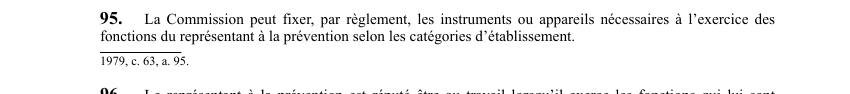

art-95-LSST : instruments représentant prévention
Un article du wiki ⚖️ Recueil législatif
🌐 LegisQuébec · 📄 PDF officiel (page 29)
Texte officiel : capture du PDF

🔗 Ouvrir a cette page : LSST.pdf : page 29 · texte a jour au 26 mars 2024
En bref
La Commission peut fixer, par règlement, les instruments ou appareils nécessaires à l'exercice des fonctions du représentant à la prévention selon les catégories d'établissement. Cette obligation vise la Commission.
- Selon les catégories d'établissement.
Voir aussi
- art. 93 : avis d'absence du représentant · obligation : le représentant à la prévention doit aviser son supérieur immédiat ou son employeur lorsqu'il s'absente de son travail pour exercer ses fonctions.
- art. 94 : coopération employeur représentant · obligation : l'employeur doit coopérer avec le représentant à la prévention, lui fournir les instruments ou appareils dont il peut avoir raisonnablement besoin et lui permettre de remplir ses fonctions.
- art. 96 : représentant réputé au travail · le représentant à la prévention est réputé être au travail lorsqu'il exerce les fonctions qui lui sont dévolues.
- art. 97 : protection représentant prévention · faculté : l'employeur ne peut congédier, suspendre ou déplacer le représentant à la prévention ni lui imposer des mesures discriminatoires ou des représailles pour le motif qu'il exerce ses fonctions; toutefois, une sanction demeure possible en cas d'abus.
- 🔧 Modifié par : LMRSST · Article modificateur de la LMRSST.
- ↑ Loi : LSST
Pages qui pointent ici (5)
- art-166-LMRSST, mod. art. 95 LSST Recueil législatif
- art-93-LSST, représentant prévention Recueil législatif
- art-94-LSST, représentant prévention Recueil législatif
- art-96-LSST, représentant prévention Recueil législatif
- art-97-LSST, fonctions représentant Recueil législatif